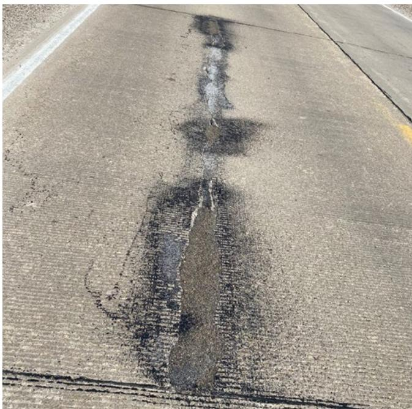
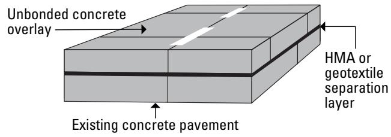
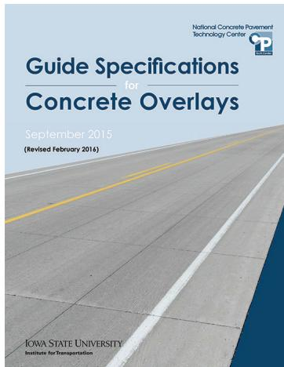
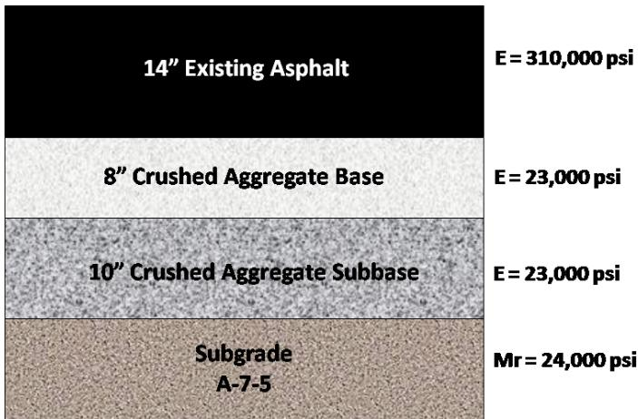

Concrete Overlay Mix Design and Surface Preparation
Concrete Overlay Mix Design and Surface Preparation constitute a systematic, agency‑calibrated methodology for rehabilitating deteriorated pavements—whether asphalt, concrete or composite—by placing a thin (typically 4–8 in.) bonded or unbonded concrete slab over the existing deck, thereby offering a cost‑effective, rapidly constructed alternative to full reconstruction [2] [3]. The process integrates mechanistic‑empirical design tools (e.g., 1993 AASHTO Guide, AASHTO ME Design, ACPA modified method, CDOT procedure) that iteratively evaluate overlay thickness, joint spacing (≤12 ft), traffic loading (ESALs), material flexural strength, modulus of elasticity, Poisson’s ratio, subgrade stiffness and temperature gradients to predict and control stresses, strains and thermal effects in the new pavement [2] [4]. Prior to placement, prescribed surface‑preparation steps—milling the existing surface and thorough cleaning—ensure proper bond conditions, after which design specifications such as 6‑ft joint spacing, tied concrete shoulders, dowel bars and calibrated correction factors guide the final mix design and performance expectations [2] [3].
Sources (5)
Purpose and design objectives
Concrete overlay mix design and surface preparation are intended to address the pressing need for a practical, cost‑effective rehabilitation solution for aging pavements where full reconstruction is unaffordable or impractical, while also supplying a unified, clear methodology for selecting and specifying the appropriate overlay type. The guides identify that agencies require consistent, calibrated procedures that predict and control stresses, strains, and temperature effects in bonded or unbonded overlays (typically 4–8 in thick with joint spacings up to 12 ft) on moderate‑ or high‑volume roadways, and that these procedures must be expressed in agency‑specific specifications aligned with the FHWA Next Generation Concrete Pavement Road Map. By consolidating disparate design tools into a recommended web‑based framework and providing detailed surface‑preparation requirements, the guidance seeks to ensure that overlay projects achieve required load transfer, durability, serviceability, and performance expectations across states. [2][3][4]
The figure below illustrates a thin bonded overlay applied to structurally sound concrete pavement.

Deteriorated longitudinal crack in a COC–B overlay [3]The image displays a close-up view of a concrete pavement surface featuring a prominent, darkened longitudinal crack running vertically through the frame. This figure illustrates a specific failure mode—a deteriorated longitudinal crack—that can occur in a bonded overlay when it is placed on an existing pavement that lacks sufficient structural condition. The presence of this defect highlights the critical surface preparation requirement for concrete overlays, which mandates placing the new slab on an existing pavement that is structurally sound to ensure proper performance.
[2] — 1. Introduction (pp. 16–69); [3] — App. A (p. 96); [4] — 5. Condition assessment profile (p. 32)
Scope and applicability
“Concrete overlays can be used to rehabilitate all existing pavement types exhibiting various levels of deterioration.” Accordingly, the Concrete Overlay Mix Design and Surface Preparation approach is appropriate whenever an asphalt, concrete, or composite deck has deteriorated enough that rehabilitation rather than full reconstruction is preferred—especially under budget constraints or when rapid construction is needed. It offers “a more cost-effective, rapidly constructed, and sustainable option than full reconstruction.” The methodology embraces the two main overlay categories identified by “The Guide to Concrete Overlays (Harrington et al. 2008) categorizes all concrete overlays into two main types: bonded and unbonded,” covering both “Bonded overlays of concrete pavements” and “Unbonded overlays of concrete pavements and composite pavements,” as well as “Unbonded overlays of asphalt pavements.” and “Bonded overlays of asphalt pavments.” Specific configurations include “concrete on concrete–bonded (COC‑B)”, “concrete on concrete–unbonded (COC‑U)” and “concrete on asphalt–unbonded (COA‑U) overlays.” The design tools are intended for facilities “that are not covered by AASHTOWare Pavement ME Design,” targeting moderate‑ to high‑volume traffic corridors such as state routes and U.S. highways, as reflected in the statement that “The procedure is intended for moderate- or high-volume traffic roadways such as State routes and U.S. highways.” The CDOT mechanistic method exemplifies this by “design[ing] bonded concrete overlays of asphalt pavements ranging from 4 to 8 in. thick with joint spacings up to 12 ft,” typically employing “typical design features: 6 ft joint spacing, tied concrete shoulders and longitudinal joints, and milling and cleaning for surface preparation.” [2][3]
The figure below illustrates a typical bonded concrete overlay configuration with a thickness of 4.5 inches.
 Visual demonstration of a bonded concrete overlay thickness using a folding ruler. [2]
Visual demonstration of a bonded concrete overlay thickness using a folding ruler. [2]
The image displays a folded measuring tape positioned against the edge of a pavement structure to indicate the depth of the new layer. This visualizes the physical application of bonded concrete overlays, which are used to restore structural capacity and correct surface defects by placing a thin slab over an existing pavement. The figure illustrates the specific thickness range characteristic of these rehabilitation treatments.
[2] — 1. Introduction (pp. 16–69); [3] — App. A (p. 96)
The guides indicate that the mechanistic procedure for bonded concrete overlays is limited to overlays 4‑8 in. thick with joint spacings ≤12 ft on moderate‑to high‑volume state routes and U.S. highways. Because it was calibrated only on Colorado field data, it has not been validated for other climate zones, so projects in markedly different temperature regimes should consider an alternative design approach. Likewise, if a project requires overlay thicknesses or joint spacings beyond those limits, involves low‑volume traffic conditions, or uses overlay types that are not well addressed—such as thin or ultrathin bonded overlays on existing asphalt, composite pavements—a different design approach becomes preferable. In addition, when a facility falls within the scope of AASHTOWare Pavement ME Design, the recommended tool (PavementDesigner.org) is intended only for facilities not covered by that tool; therefore an alternative method must be used. Finally, concrete‑on‑asphalt bonded (COA‑B) overlays are excluded from the overlay modules of PavementDesigner.org and must be designed with the University of Pittsburgh’s BCOA‑ME design tool. [2][3]
The following figure illustrates the distinction between bonded and unbonded overlays of existing concrete pavements.

Schematic cross-section of an unbonded concrete overlay on existing pavement. [3]The figure displays a three-dimensional block diagram illustrating the layered structure of a Concrete Overlay on Concrete (COC) system, specifically identifying the top layer as an “Unbonded concrete overlay” and the bottom layer as “Existing concrete pavement.” A distinct separation layer is shown between the two concrete slabs, which the source context identifies as a component designed to provide isolation, bedding, and/or drainage. This visual representation directly supports the CONCEPT of Concrete Overlay Mix Design and Surface Preparation by illustrating the physical stratification required for unbonded rehabilitation techniques.
[2] — 1. Introduction (pp. 21–69); [3] — App. A (p. 96)
Design inputs and requirements
The CDOT overlay design process requires site‑related inputs such as the proposed concrete overlay thickness, joint spacing, and the temperature gradient; traffic loading expressed as ESALs; material properties for the new concrete overlay including its flexural strength, modulus of elasticity and Poisson’s ratio; existing‑condition data on the underlying asphalt pavement—its thickness, modulus of elasticity, Poisson’s ratio and fatigue level; geotechnical information in the form of subgrade or subbase stiffness (k‑value); and these factors together drive the iterative determination of overlay thickness. [2]
[2] — 1. Introduction (p. 21)
The concrete overlay mix‑design and surface‑preparation process must be based on the established agency procedures cited across the guides. Designers are required to follow “the 1993 AASHTO Guide for Design of Pavement Structures (4th Edition)” and “the AASHTO Mechanistic‑Empirical Pavement Design Guide (interim edition)”. In addition, “the American Concrete Pavement Association’s modified method for bonded concrete overlays of asphalt pavements” and “the Colorado Department of Transportation’s bonded overlay method” are referenced. State mechanistic specifications impose practical constraints such as “6 ft joint spacing”, a former requirement of “minimum subgrade support (k‑value) of 150 psi/in.”, and a “minimum existing asphalt thickness of 5 in”. For projects not covered by AASHTOWare Pavement ME Design, the industry’s recommended methodology “serves as the concrete pavement industry’s recommended design methodology for all facilities that are not covered by AASHTOWare Pavement ME Design”, which is delivered through the free web‑based application “PavementDesigner.org”. The primary governing document is “The Guide Specifications for Concrete Overlays (available at http:// www.cptechcenter. org/technical-library/ documents/overlay_ guide_specifications. pdf ) were developed in September 2015, at the request of various paving associations across the country, and re‑issued in February 2016”, a result of “the Federal Highway Administration (FHWA) pooled fund Next Generation Concrete Pavement Road Map (TPF‑5(286))”. These guide specifications must be reviewed against each agency’s standard concrete paving specification “to develop a specification that relates directly to concrete overlays.” Collectively, these standards and constraints define required overlay thicknesses, joint layouts, dowel and shoulder details, material property evaluations, traffic loading considerations, and preparation steps such as milling and cleaning. [2][3][4]
The following figure displays the front cover of the primary governing document referenced in these specifications.

Front cover of the Guide Specifications for Concrete Overlays document. [4]The image displays the front cover of a publication titled “Guide Specifications for Concrete Overlays” produced by the National Concrete Pavement Technology Center and Iowa State University.
[2] — 1. Introduction (pp. 21–69); [3] — App. A (p. 96); [4] — 5. Condition assessment profile (p. 32)
Design methods and criteria
The guides rely on four established overlay design procedures: the 1993 AASHTO Guide for Design of Pavement Structures, the AASHTO Mechanistic‑Empirical Pavement Design (ME) Guide, the American Concrete Pavement Association’s modified bonded concrete overlay method, and the Colorado DOT bonded overlay method. The method described in the 1993 AASHTO Guide for Design of Pavement Structures, 4th Edition (1993 AASHTO Guide). The method described in the AASHTO Mechanistic‑Empirical Pavement Design Guide, Interim Edition: A Manual of Practice (AASHTO Pavement ME Design Guide*). The ACPA modified method for bonded concrete overlays of asphalt pavements (ACPA BCOA). The Colorado Department of Transportation (CDOT) method for bonded concrete overlays of asphalt pavements. CDOT developed a mechanistic procedure to design bonded concrete overlays of asphalt pavements ranging from 4 to 8 in. thick with joint spacings up to 12 ft. Field measurements were used to develop correction factors for theoretical pavement response prediction equations. The CDOT method consists of an iterative design process where the designer evaluates the following inputs: traffic loads, material flexural strength, modulus of elasticity, Poisson’s ratio, existing asphalt properties, subgrade stiffness (k‑value), and temperature gradients. CDOT developed an in‑house spreadsheet to implement this procedure. All procedures are implemented with software tools—AASHTO Pavement ME Design, proprietary ACPA programs, and a CDOT in‑house spreadsheet—that automate the calculations, apply calibrated relationships, and generate overlay thickness recommendations consistent with mix design and surface‑preparation specifications. free, web‑based application, PavementDesigner.org, was released in 2018 and serves as the concrete pavement industry’s recommended design methodology. The overlay design modules in PavementDesigner.org facilitate the design of concrete on concrete–bonded (COC‑B), concrete on concrete–unbonded (COC‑U), and concrete on asphalt‑unbonded (COA‑U) overlays. For the design of COA‑B overlays, the program directs users to the University of Pittsburgh’s BCOA‑ME design tool. [2][3]
The following figure illustrates a predicted faulting plot generated by AASHTOWare Pavement ME Design to demonstrate the application of these design methodologies.
 Predicted Faulting over Pavement Age for an Unbonded Concrete Overlay Design. [2]
Predicted Faulting over Pavement Age for an Unbonded Concrete Overlay Design. [2]
The figure displays a graph titled “Predicted Faulting” plotting faulting in inches against pavement age in years, featuring a horizontal red threshold line at the top and two upward-sloping trend lines representing reliability predictions.
[2] — 1. Introduction (pp. 16–69); [3] — App. A (p. 96)
The CDOT mechanistic method governs concrete overlay mix design and surface preparation by requiring an iterative evaluation of overlay thickness, joint spacing, traffic loading (ESALs), material properties (flexural strength, modulus of elasticity, Poisson’s ratio) for both the new concrete and existing asphalt, subgrade/subbase stiffness, and temperature gradients. Designed for 4‑to‑8‑inch thick bonded overlays with joint spacings up to 12 ft on moderate‑ or high‑volume roads, the procedure originally imposed a minimum subgrade support of 150 psi/in and a minimum asphalt thickness of 5 in, but those thresholds were removed after later research. Current practice adopts typical design features such as 6‑ft joint spacing, tied concrete shoulders and longitudinal joints, and mandatory milling and cleaning of the existing surface before placement. [2]
The following figure illustrates a specific surface preparation technique involving an asphalt separation layer for unbonded concrete overlays.
 Application of Asphalt Separation Layer to Existing Concrete Pavement for Unbonded Concrete Overlay. [2]
Application of Asphalt Separation Layer to Existing Concrete Pavement for Unbonded Concrete Overlay. [2]
The image displays a rural highway undergoing rehabilitation, where the existing concrete pavement is visible in the foreground and transitions into a dark asphalt layer further up the road.
[2] — 1. Introduction (p. 21)
Structural section and dimensions
The guide specifies that bonded concrete overlays may be as thin as 4 in. and up to 8 in., with joint spacings permitted to 12 ft (commonly 6 ft). When designed per the 1993 AASHTO Guide, a jointed plain concrete pavement (JPCP) overlay of 9.5 in. thickness is recommended, using 15‑ft joint spacing and 1.25‑in. dowels; the AASHTO Pavement ME Design Guide yields an 8.5‑in. thick overlay with similar reinforcement. Concrete shoulders are required to be tied to the overlay, but no separate shoulder width or edge‑support dimensions are provided. The document does not prescribe base, subbase, treated‑soil, slab, or additional reinforcement thicknesses for the overlay. [2]
The following figure illustrates the summary of existing pavement cross-sections relevant to these design parameters.
 Summary of Existing Pavement Cross-Section. [2]
Summary of Existing Pavement Cross-Section. [2]
The figure displays a schematic cross-section of an existing pavement structure consisting of three distinct layers: an asphalt surface, a graded aggregate base, and a subgrade soil layer. Each layer is annotated with its thickness and corresponding stiffness parameters (modulus of elasticity or resilient modulus), which are essential inputs for mechanistic-empirical design tools used to predict stresses in a new overlay. This data characterizes the existing pavement conditions that must be evaluated prior to placing a bonded concrete overlay, as specified by the guide for rehabilitating deteriorated pavements.
[2] — 1. Introduction (pp. 21–69)
The mechanistic design procedure iterates traffic level, elastic modulus of the proposed concrete and existing asphalt, subgrade stiffness, and temperature gradients to arrive at an overlay thickness that is “4 to 8 in. thick”. Joint layout follows the same iterative logic; allowable spacing is limited to “joint spacings up to 12 ft.”, with many jurisdictions adopting a more conservative spacing for crack control. The layer configuration consists of a bonded concrete slab placed over milled and cleaned asphalt, and continuity is achieved by tying new concrete to existing pavement – “tied concrete shoulders and longitudinal joints”.
When the AASHTO design guides are employed, these geometric parameters are refined. Using the 1993 AASHTO Guide, “A JPCP overlay 9.5 in. thick with dowels and tied concrete shoulders was determined for this example using the 1993 AASHTO Guide.” The resulting dimensions drive the subsequent mix‑design and surface‑preparation specifications, ensuring that thickness, joint spacing, cross‑slope transitions, and tie‑ins collectively satisfy the prescribed performance criteria. [2]
[2] — 1. Introduction (pp. 21–69)
Materials and mixture design
The CDOT overlay design requires the designer to define the concrete overlay’s material properties—its flexural strength, modulus of elasticity and Poisson’s ratio—as well as the characteristics of the underlying asphalt layer, including its thickness, elastic modulus, Poisson’s ratio and fatigue condition. In addition, the subgrade or sub‑base stiffness expressed as a k‑value must be provided, and the surface preparation is limited to milling the existing pavement and cleaning it before placement. These inputs drive the iterative calculation of overlay thickness and joint spacing. [2]
The following figure illustrates the existing pavement cross-section that serves as the basis for these design inputs.

Summary of Existing Pavement Cross-Section. [2]The figure displays a schematic cross-section of an existing pavement structure consisting of four distinct layers: asphalt, crushed aggregate base, crushed aggregate subbase, and subgrade. Each layer is annotated with its thickness and material properties, specifically the modulus of elasticity (E) for the upper layers and the resilient modulus (Mr) for the subgrade.
[2] — 1. Introduction (p. 21)
Structural details and interfaces
The design specifies jointed plain‑concrete pavement (JPCP) overlays that employ “6 ft joint spacing” (or, where noted, “15 ft joint spacing”) together with “tied concrete shoulders and longitudinal joints.” Prior to placement the existing pavement is required to be “milled and cleaned for surface preparation.” Reinforcement is achieved through dowel bars; examples include a “JPCP overlay 9.5 in. thick with dowels and tied concrete shoulders” and a “JPCP overlay 8.5 i n. thick with 15 ft joint spacing, 1.25 in. dowels , and tied concrete shoulders.” No additional load‑transfer systems beyond the dowels and tied shoulders are prescribed. [2]
The following figure illustrates the specific design properties menu used within AASHTOWare Pavement ME to configure these jointed plain-concrete pavement parameters.
 Screen capture of the JPCP Design Properties menu in AASHTOWare Pavement ME Design software. [2]
Screen capture of the JPCP Design Properties menu in AASHTOWare Pavement ME Design software. [2]
The figure displays a software interface for defining Jointed Plain Concrete Pavement (JPCP) design properties, specifically highlighting parameters such as joint spacing and dowel bar reinforcement. It visually demonstrates the input of “No friction” to define the interface condition between layers, which corresponds to an unbonded overlay scenario where bond weakens quickly after construction due to traffic and moisture. The interface also allows for the selection of base layer erodibility, a critical factor in mechanistic-empirical design tools used to predict pavement performance.
[2] — 1. Introduction (pp. 21–69)
The guides require that the overlay interface be first classified as bonded or unbonded. One source states “The overlay interface is first classified as bonded or unbonded according to the 1993 AASHTO Guide or the AASHTO Pavement ME Design Guide,” and another provides selectable options such as “concrete on concrete–bonded (COC‑B)”, “concrete on concrete–unbonded (COC‑U)” and “concrete on asphalt–unbonded (COA‑U) overlays.” When a bonded concrete‑over‑asphalt condition is needed, the guidance notes “For the design of COA‑B overlays, the program directs users to the University of Pittsburgh’s BCOA‑ME design tool.” After classification, designers select geometry—thickness, joint spacing, dowel size and tied shoulders—to achieve desired load‑transfer behavior. Typical specifications include “typical design features: 6 ft joint spacing, tied concrete shoulders and longitudinal joints, and milling and cleaning for surface preparation.” The mechanistic procedure refines these choices by applying calibration factors: “calibration factors … adjust the theoretical stresses and strains to account for the partial bonding at the concrete overlay and asphalt interface.” This iterative process evaluates inputs such as overlay thickness, joint spacing, traffic loads, material moduli, subgrade stiffness and temperature gradients before proceeding to the next phase, noted as “At this point in the overlay design process, the next steps are conducting mix designs and assembling surface preparation specifications.” [2][3]
The following figure illustrates the behavior of and flexural stress distribution through the layers of bonded and unbonded overlay systems.
 Flexural stress distribution through the layers of an unbonded overlay system. [3]
Flexural stress distribution through the layers of an unbonded overlay system. [3]
The figure illustrates the flexural stress distribution within a pavement structure consisting of a concrete layer over an asphalt layer, labeled as an “Unbonded” interface at the bottom. It depicts the neutral axis (NA) and regions of compression (Comp.) and tension for both the PCC and Asphalt layers, showing how stresses are distributed under a wheel load.
[2] — 1. Introduction (pp. 21–69); [3] — App. A (p. 96)
Drainage, environment, and accessibility
The CDOT overlay procedure requires that the concrete overlay be designed with a joint spacing of six feet, include tied concrete shoulders and longitudinal joints, and that the existing pavement surface be milled and cleaned before placement. These geometric and surface‑preparation specifications are the primary user‑oriented requirements noted; no additional accessibility or safety criteria are detailed in the method. [2]
[2] — 1. Introduction (p. 21)
References
- Guide to the Design of Concrete Overlays Using Existing Methodologies ·
Overlays_Design_Guide_508 - Guide to Concrete Overlays (Fourth Edition) ·
guide_to_concrete_overlays_4th_Ed_web - Guide for the Development of Concrete Overlay Construction Documents ·
overlay_construction_doc_dev_guide_w_cvr